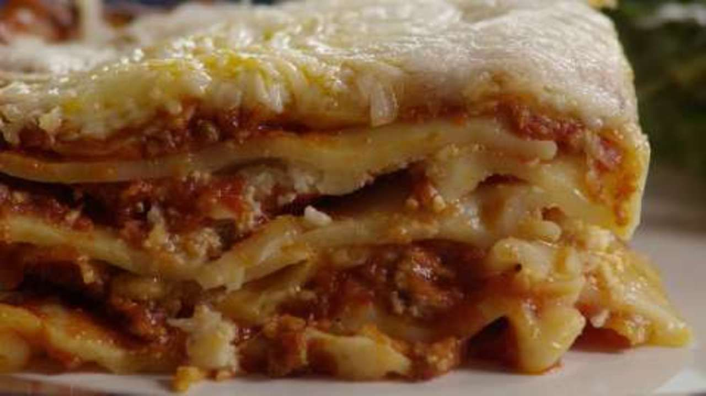

Lasagna

Lasagna with a meaty, made-from-scratch tomato sauce and a deliciously chsy filling. A traditional recipe of the Italian cusine, it is made of stacked layers of lagna pasta alternating with ragù filling, bechamel sauce, tomato sauce and cheese.
Ingredients
- 1 pound lean ground beef
- 1 onion, chopped
- 2 (6 ounce) cans tomato paste
- 1 (14.5 ounce) can crushed tomatoes
- 2 cups water
- 1 tablespoon dried oregano
- 2 teaspoons garlic powder
- 2 teaspoons salt
- ¼ teaspoon ground black pepper
- 1 tablespoon white sugar
- 12 ounces cottage cheese
- ½ cup grated Parmesan cheese
- 1 egg
- 9 lasagna noodles
- 1 pound shredded mozzarella cheese
Steps
- Combine pork and ground beef in a large, deep skillet over medium-high heat; cook and stir until browned and crumbly, 5 to 7 minutes. Add onion and cook until translucent, about 5 minutes.
- Stir in crushed tomatoes, tomato sauce, 1 tablespoon fresh parsley, garlic, basil, salt, oregano, and sugar. Reduce heat to medium-low and simmer, stirring occasionally, for 30 minutes.
- While the sauce is simmering, bring a large pot of lightly salted water to a boil. Cook lasagna noodles in the boiling water, stirring occasionally, until tender yet firm to the bite, 8 to 10 minutes. Drain and set aside.
- While the noodles are cooking, preheat the oven to 375 degrees F (190 degrees C).
- Mix cottage cheese, Parmesan cheese, eggs, remaining 1 tablespoon fresh parsley, salt, and pepper in a large bowl until combined.
- Assemble lasagna: Spread a spoon or two of sauce over the bottom of a 9x13-inch baking dish just to to coat it. Place two layers of noodles over the sauce to cover. Layer with 1/2 of the cheese mixture, 1/2 of the remaining sauce, and 1/2 of the mozzarella cheese. Repeat layers once more using the remaining noodles, cheese mixture, sauce, and mozzarella. Cover the baking dish with aluminum foil.
- Bake in the preheated oven for 30 to 40 minutes. Remove the foil and bake until cheese is golden brown, 5 to 10 more minutes.
- Remove from the oven and let stand for 10 minutes before cutting and serving.